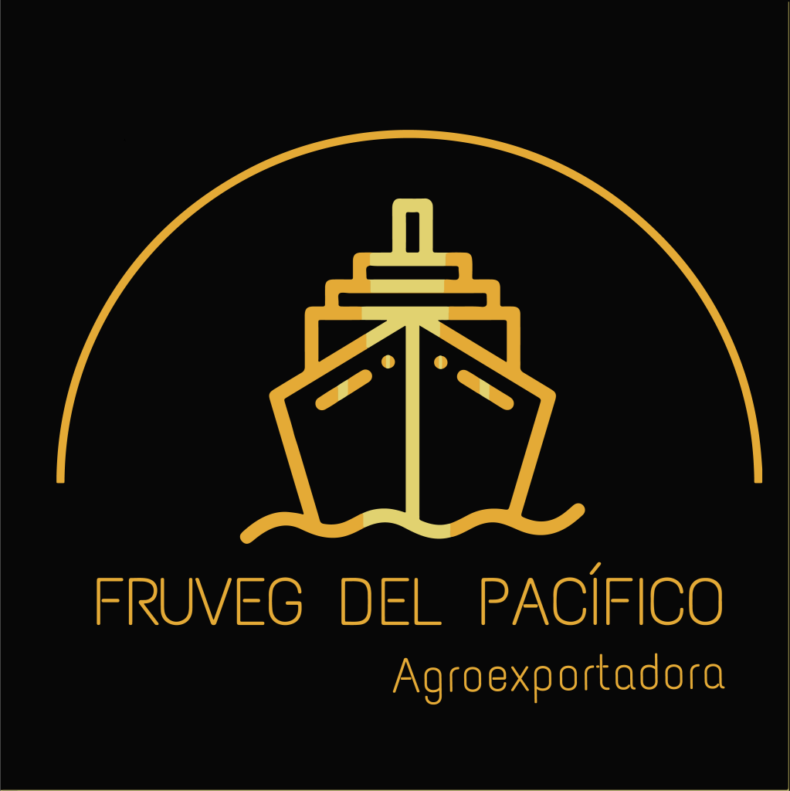

DISPONIBLE
DISPONIBLEFRUTA TROPICAL
Piña MD2
Dulzor equilibrado, pulpa amarilla y una presentación que viaja bien.


ContáctanosFRUVEG DEL PACÍFICO · PANAMÁ
Seleccionamos frutas y vegetales con la calidad, presentación y coordinación que tu mercado necesita.
Explora el portafolioCALIDAD · ORIGEN · CONFIANZA
* NUESTRO PORTAFOLIO
DISPONIBLEFRUTA TROPICAL
Dulzor equilibrado, pulpa amarilla y una presentación que viaja bien.
 DISPONIBLE
DISPONIBLERAÍZ FRESCA
Selección fresca para una operación confiable y de buena rotación.
 BAJO CONSULTA
BAJO CONSULTAFRUTA FRESCA
Textura cremosa, color intenso y selección por calibre bajo consulta.
PRÓXIMAMENTEPORTAFOLIO EN CRECIMIENTO
Seguimos ampliando el portafolio de acuerdo con cada oportunidad comercial.
Consultar disponibilidadNo encontramos ese producto. Escríbenos para consultar el portafolio completo.
* DISPONIBILIDAD BAJO CONSULTA
Las fichas son referenciales. Confirma con nosotros calibre, peso, empaque, volumen y ventana de entrega para tu mercado.
Hablemos de tu pedido